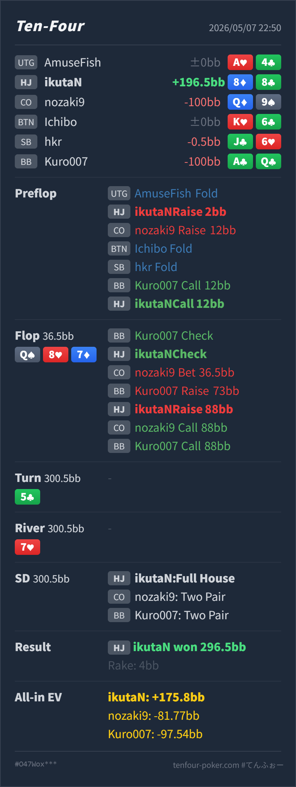

T4 HAND REVIEW
HJ 8♦8♣ の 3bet pot multiway set all-in レビュー
GTO基準では、preflop callだけ境界ですが、flop以降はかなり良いです。
Hero: HJ
8♦ 8♣Villain: CO
Q♦ 9♠ / BB A♣ Q♣Board:
Q♠ 8♥ 7♦ / 5♣ / 7♥- 主要論点: 大きい3bet potのmultiwayで、setを作った時に即座にstackを入れるか。
- 次回の判断基準:
88のpreflop callは、単にpocket pairだから自動callではありません。3bet sizeが大きい時は、相手がpostflopでtop pairを過大評価するか、cold callerがいてimplied oddsが十分かを見ます。 - 5枚役確認: Heroの最善5枚は
8♦8♣8♥7♦7♥です。上にはQQの上位full house、77のquadsがあります。
ハンド要約
- Hero
- HJ
8♦ 8♣ - Villain
- CO
Q♦ 9♠/ BBA♣ Q♣ - 形式
- T4 6MAX Cash NL50, 100BB, Anteなし
- Preflop
- UTG fold, HJ Hero raise
2BB, CO raise12BB, BTN fold, SB fold, BB call, HJ Hero call - Board
Q♠ 8♥ 7♦/5♣/7♥- Flop
- Pot
36.5BB, BB check, HJ Hero check, CO bet36.5BB, BB raise73BB, HJ Hero raise88BB, CO call, BB call - Turn
- Pot
300.5BB,5♣ - River
- Pot
300.5BB,7♥ - Showdown
- HJ Hero full house, CO two pair, BB two pair
- Result
- HJ Hero won
296.5BB, rake4BB

判断のズレ
| 論点 | その場で置いた見立て | どこがズレやすいか | 次回の基準 |
|---|---|---|---|
| preflopの88 call | pocket pairなのでset狙いでcallできそう | COの 12BB はかなり大きく、HJはOOPになりやすいので、単独ならfold寄りになります。今回はBB cold callでpot oddsとimplied oddsが上がっています。 | 大きい3betへの小中pair callは、cold caller、残りstack、相手のtop pair過大評価が揃う時だけ寄せる |
| flop setのstack off | setだが、CO betとBB raiseが強すぎて怖い | Q87 は T9/65/JT/98 などのdrawも多く、CO/BBにはAQ/KQ/QJのtop pair過大評価も残ります。callだけにするとturnでstraight完成カードが多く、valueも逃します。 | multiwayでsetを作り、相手がtop pairを降りなさそうなら、drawに価格を与えずstackを入れる |
ストリート別レビュー
| ストリート | その時点の見え方 | 実ハンドの位置づけ | 評価 | その場の一手 |
|---|---|---|---|---|
| Preflop | HJ openに対してCOが 12BB へ大きく3betし、BBがcold callしました。COのサイズはかなり大きく、BB cold callも標準より特殊です。 | 8♦8♣ はset valueがありますが、3bet sizeが大きいので自動callではありません。 | 境界だが許容 | BBが入ったことでcallは成立します。CO単独の大きい3betならfold頻度を上げます。 |
Flop Q♠ 8♥ 7♦ | COはoverpair/AQ/KQ/QJとbluffを持ちます。BBはcold call後なのでAQ/KQ、pocket、suited broadwayが残り、raiseにはtop pair過大評価とset/drawが混ざります。 | Heroはmiddle setで非常に強いvalueです。負けている主なmade handは QQ だけです。 | 良い | CO pot bet、BB raiseに対して実質all-inへ進めたのは良いです。multiwayなのでcallでslowplayするより、top pairとdrawから最大値を取ります。 |
Turn 5♣ | all-in後のrunoutです。96/64 のstraightが一部完成しますが、flop時点でstackが入っているため判断は変わりません。 | Heroはsetのままです。 | 評価対象外 | flopで正しく入れています。 |
River 7♥ | board pairになり、Heroはfull houseへ改善します。QQ と 77 以外の多くのvalue handに勝っています。 | Heroは 8♦8♣8♥7♦7♥ のfull houseです。 | 良い結果 | river時点ではCO/BBのtwo pairを大きく上回っています。 |
持ち帰り
88は3bet potで常にcallではありません。大きい3betには、setを作った時に本当にstackを取れる相手かを見ます。- 今回はBB cold callでpotが膨らみ、CO/BBがtop pairを過大評価しやすい構造だったため、preflop callの実戦価値が上がっています。
- multiwayでmiddle setを作ったら、特に
Q87のような連結boardではslowplayしすぎません。straight完成カードが多いので、flopでstackを入れる方が自然です。 - 相手の大きすぎる3betやtop pairでの大きいraiseが見える時は、set以上のvalue handで強く取り切ります。
exploit 補足
- COの
12BB3betはかなり大きく、さらにflop pot betまで続けています。このレンジにQ9のようなtop pair過大評価が混ざるなら、set mineの期待値は大きく上がります。 - BBもpreflopでcold callし、flopでAQを強く扱っています。こういう相手には、setを引いた時にcallで隠すより、早めにstackを入れてよいです。
- ただし同じpreflop callを、堅い3bet range相手に毎回やると、setを引けない時の損失が大きくなります。今回のcallは相手のサイズとmultiway構造込みの許容です。